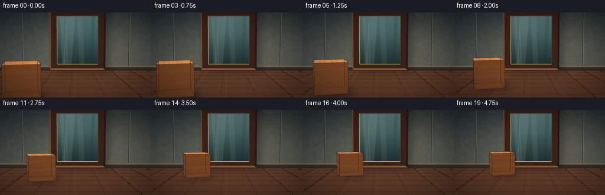
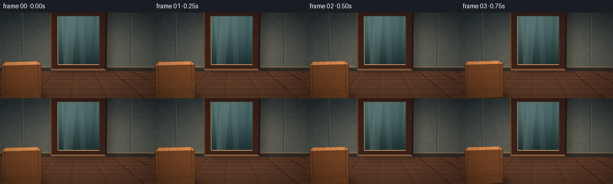
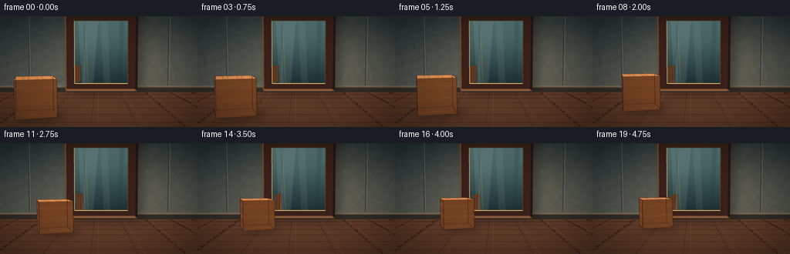
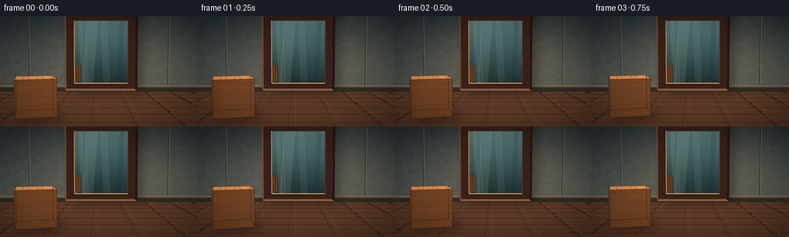
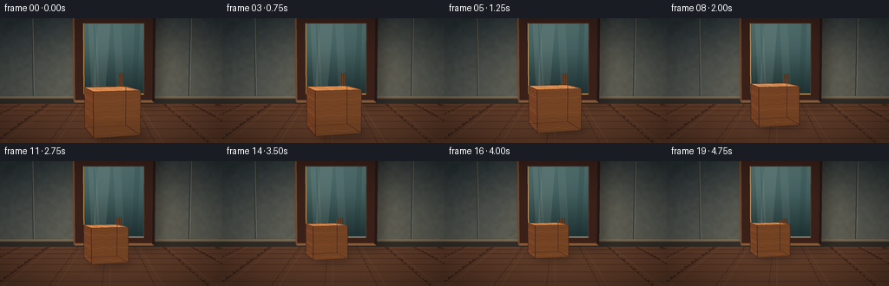
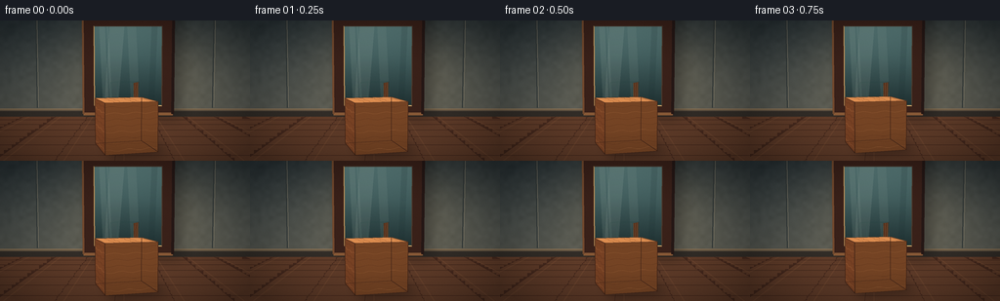
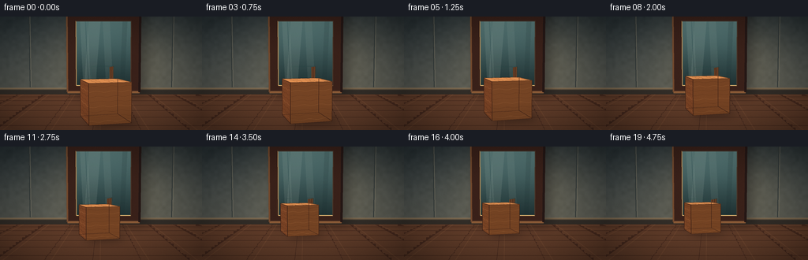

CODING AGENTS AS PIXEL WORLD MODELS
traex/DeepSeek-V4.1-Flash · phygen_061
点击播放 · 原生 RGB 像素
逐轮保存的候选
回放视频、检查图与代码变化。
每份候选均可单独播放。实际图片检查记录在下方工具轨迹中。
候选 01播放与检查图
点击播放 · 原生 RGB 像素


展开代码变化
--- 上一保存版本
+++ 本次保存版本
@@ -0,0 +1,489 @@
+#!/usr/bin/env python3
+"""Procedurally render a wooden block approaching an upright mirror."""
+
+from __future__ import annotations
+
+import math
+import shutil
+import sys
+from pathlib import Path
+
+import numpy as np
+from PIL import Image, ImageDraw, ImageFilter
+
+import artifact_io
+
+
+WIDTH = 256
+HEIGHT = 144
+FRAMES = 20
+FPS = 4.0
+SS = 4 # Supersampling factor.
+SW = WIDTH * SS
+SH = HEIGHT * SS
+
+ROOT = Path(__file__).resolve().parent
+MIRROR_Z = -2.05
+
+
+def normalize(vector: np.ndarray) -> np.ndarray:
+ return vector / np.linalg.norm(vector)
+
+
+CAMERA = np.array([0.0, 0.90, 4.20], dtype=float)
+FORWARD = normalize(np.array([0.0, 0.62, 0.0]) - CAMERA)
+RIGHT = normalize(np.cross(FORWARD, np.array([0.0, 1.0, 0.0])))
+UP = normalize(np.cross(RIGHT, FORWARD))
+FOCAL = 350.0 * SS
+
+LIGHT = normalize(np.array([-0.55, 1.0, 0.35], dtype=float))
+
+
+def project(point: np.ndarray) -> tuple[float, float, float]:
+ relative = np.asarray(point, dtype=float) - CAMERA
+ x_cam = float(np.dot(relative, RIGHT))
+ y_cam = float(np.dot(relative, UP))
+ depth = float(np.dot(relative, FORWARD))
+ return (
+ SW * 0.5 + FOCAL * x_cam / max(depth, 1e-5),
+ SH * 0.5 - FOCAL * y_cam / max(depth, 1e-5),
+ depth,
+ )
+
+
+def p2(point: np.ndarray) -> tuple[float, float]:
+ x, y, _ = project(point)
+ return x, y
+
+
+def blend_color(a: tuple[int, int, int], b: tuple[int, int, int], t: float) -> tuple[int, int, int]:
+ return tuple(int(round(a[i] * (1.0 - t) + b[i] * t)) for i in range(3))
+
+
+def scale_color(color: tuple[int, int, int], amount: float) -> tuple[int, int, int]:
+ return tuple(max(0, min(255, int(round(channel * amount)))) for channel in color)
+
+
+def make_background() -> Image.Image:
+ yy = np.linspace(0.0, 1.0, SH, dtype=np.float32)[:, None]
+ xx = np.linspace(0.0, 1.0, SW, dtype=np.float32)[None, :]
+ wall_top = np.array([38, 49, 54], dtype=np.float32)
+ wall_bottom = np.array([106, 103, 90], dtype=np.float32)
+ mix = np.clip((yy + 0.0 * xx) * 0.84 + 0.04, 0.0, 1.0)
+ image = wall_top[None, None, :] * (1.0 - mix[:, :, None]) + wall_bottom[None, None, :] * mix[:, :, None]
+
+ # A soft pool of warm light behind the mirror gives the scene depth.
+ glow = np.exp(
+ -(
+ ((xx - 0.58) ** 2) / (2.0 * 0.25**2)
+ + ((yy - 0.33) ** 2) / (2.0 * 0.31**2)
+ )
+ )
+ image += glow[:, :, None] * np.array([32, 24, 13], dtype=np.float32)
+
+ # Fine plaster mottling, fixed in world space.
+ rng = np.random.default_rng(12)
+ low = rng.normal(0.0, 1.0, (SH // 16 + 2, SW // 16 + 2)).astype(np.float32)
+ low_image = Image.fromarray(np.uint8(np.clip(low * 15.0 + 128.0, 0, 255)), mode="L")
+ low_image = low_image.resize((SW, SH), Image.Resampling.BICUBIC).filter(ImageFilter.GaussianBlur(2.0))
+ texture = np.asarray(low_image, dtype=np.float32) - 128.0
+ image += texture[:, :, None] * 0.11
+ return Image.fromarray(np.uint8(np.clip(image, 0, 255)), mode="RGB")
+
+
+def draw_floor(image: Image.Image, draw: ImageDraw.ImageDraw) -> None:
+ # The floor polygon extends beyond the frame; the near edge is off camera.
+ floor_points = [
+ p2(np.array([-3.2, 0.0, -2.08])),
+ p2(np.array([3.2, 0.0, -2.08])),
+ p2(np.array([3.2, 0.0, 4.5])),
+ p2(np.array([-3.2, 0.0, 4.5])),
+ ]
+ draw.polygon(floor_points, fill=(91, 57, 39))
+
+ # Board joints in perspective.
+ for x in np.arange(-3.0, 3.01, 0.58):
+ start = p2(np.array([x, 0.003, -2.07]))
+ end = p2(np.array([x, 0.003, 4.4]))
+ draw.line([start, end], fill=(66, 39, 28), width=max(1, SS // 2))
+
+ for z in np.arange(-1.65, 4.3, 0.48):
+ start = p2(np.array([-3.2, 0.004, z]))
+ end = p2(np.array([3.2, 0.004, z]))
+ draw.line([start, end], fill=(63, 37, 26), width=max(1, SS // 2))
+
+ # Subtle sheen runs away from the window light.
+ sheen = Image.new("RGBA", (SW, SH), (0, 0, 0, 0))
+ sheen_draw = ImageDraw.Draw(sheen)
+ for x in np.arange(-2.8, 3.0, 0.58):
+ start = p2(np.array([x - 0.11, 0.006, -2.0]))
+ end = p2(np.array([x - 0.11, 0.006, 3.2]))
+ sheen_draw.line([start, end], fill=(219, 154, 93, 19), width=SS)
+ image.alpha_composite(sheen)
+
+
+def draw_room_details(image: Image.Image, draw: ImageDraw.ImageDraw) -> None:
+ # Baseboard and its shadow establish the wall-floor junction.
+ wall_z = -2.075
+ base = [
+ p2(np.array([-3.2, 0.13, wall_z])),
+ p2(np.array([3.2, 0.13, wall_z])),
+ p2(np.array([3.2, 0.0, wall_z])),
+ p2(np.array([-3.2, 0.0, wall_z])),
+ ]
+ draw.polygon(base, fill=(47, 42, 37))
+ trim = [
+ p2(np.array([-3.2, 0.145, wall_z - 0.003])),
+ p2(np.array([3.2, 0.145, wall_z - 0.003])),
+ p2(np.array([3.2, 0.105, wall_z - 0.003])),
+ p2(np.array([-3.2, 0.105, wall_z - 0.003])),
+ ]
+ draw.polygon(trim, fill=(92, 79, 62))
+ highlight = p2(np.array([-3.2, 0.139, wall_z - 0.006])), p2(np.array([3.2, 0.139, wall_z - 0.006]))
+ draw.line(highlight, fill=(130, 108, 80), width=SS)
+
+ # Restrained wall panels, visible mostly at the edges.
+ for x in (-1.62, 1.62):
+ draw.line(
+ [p2(np.array([x, 0.16, wall_z - 0.01])), p2(np.array([x, 3.0, wall_z - 0.01]))],
+ fill=(49, 55, 54),
+ width=SS,
+ )
+ draw.line(
+ [p2(np.array([x + 0.025, 0.17, wall_z - 0.011])), p2(np.array([x + 0.025, 2.98, wall_z - 0.011]))],
+ fill=(116, 111, 95),
+ width=max(1, SS // 2),
+ )
+
+
+def cuboid_geometry(center: np.ndarray, half_size: np.ndarray, yaw: float) -> tuple[np.ndarray, dict[str, list[int]]]:
+ sx, sy, sz = half_size
+ local = np.array(
+ [
+ [-sx, -sy, -sz],
+ [sx, -sy, -sz],
+ [sx, sy, -sz],
+ [-sx, sy, -sz],
+ [-sx, -sy, sz],
+ [sx, -sy, sz],
+ [sx, sy, sz],
+ [-sx, sy, sz],
+ ],
+ dtype=float,
+ )
+ c, s = math.cos(yaw), math.sin(yaw)
+ rotation = np.array([[c, 0.0, s], [0.0, 1.0, 0.0], [-s, 0.0, c]])
+ vertices = local @ rotation.T + center
+ faces = {
+ "back": [0, 1, 2, 3],
+ "front": [4, 5, 6, 7],
+ "left": [0, 4, 7, 3],
+ "right": [1, 2, 6, 5],
+ "bottom": [0, 1, 5, 4],
+ "top": [3, 7, 6, 2],
+ }
+ return vertices, faces
+
+
+def face_normal(vertices: np.ndarray, indices: list[int]) -> np.ndarray:
+ p0, p1, p2 = (vertices[index] for index in indices[:3])
+ return normalize(np.cross(p1 - p0, p2 - p0))
+
+
+def draw_wood_face(
+ image: Image.Image,
+ draw: ImageDraw.ImageDraw,
+ vertices: np.ndarray,
+ indices: list[int],
+ base: tuple[int, int, int],
+ grain_phase: float,
+ light_amount: float,
+) -> None:
+ poly = [p2(vertices[index]) for index in indices]
+ draw.polygon(poly, fill=scale_color(base, light_amount))
+
+ # Clip a handful of warped grain lines to this projected face.
+ mask = Image.new("L", (SW, SH), 0)
+ ImageDraw.Draw(mask).polygon(poly, fill=255)
+ grain = Image.new("RGBA", (SW, SH), (0, 0, 0, 0))
+ grain_draw = ImageDraw.Draw(grain)
+
+ p0 = vertices[indices[0]]
+ u_edge = vertices[indices[1]] - vertices[indices[0]]
+ v_edge = vertices[indices[3]] - vertices[indices[0]]
+ for line_index in range(8):
+ v = (line_index + 0.7) / 8.4
+ samples = []
+ for step in range(13):
+ u = step / 12.0
+ wobble = 0.018 * math.sin(step * 1.31 + grain_phase + line_index * 0.72)
+ point = p0 + u_edge * u + v_edge * np.clip(v + wobble, 0.01, 0.99)
+ samples.append(p2(point))
+ color = (61, 31, 17, 82) if line_index % 3 else (225, 151, 91, 54)
+ grain_draw.line(samples, fill=color, width=max(1, SS // 2), joint="curve")
+ grain.putalpha(Image.composite(grain.getchannel("A"), Image.new("L", (SW, SH), 0), mask))
+ image.alpha_composite(grain)
+
+ # A bright edge catches the room light.
+ draw.line(poly, fill=scale_color(base, 0.58), width=max(1, SS // 2))
+
+
+def draw_block(
+ image: Image.Image,
+ draw: ImageDraw.ImageDraw,
+ center: np.ndarray,
+ half_size: np.ndarray,
+ yaw: float,
+ reflected: bool = False,
+) -> None:
+ vertices, faces = cuboid_geometry(center, half_size, yaw)
+ if reflected:
+ vertices = vertices.copy()
+ vertices[:, 2] = 2.0 * MIRROR_Z - vertices[:, 2]
+
+ visible = []
+ for name, indices in faces.items():
+ normal = face_normal(vertices, indices)
+ if reflected:
+ normal = normal.copy()
+ normal[2] *= -1.0
+ face_center = np.mean(vertices[indices], axis=0)
+ to_camera = CAMERA - face_center
+ if np.dot(normal, to_camera) > 0.0:
+ visible.append((float(np.dot(face_center - CAMERA, FORWARD)), name, indices, normal))
+ visible.sort(reverse=True)
+
+ face_colors = {
+ "front": (157, 91, 48),
+ "right": (116, 62, 34),
+ "left": (132, 73, 40),
+ "top": (194, 124, 70),
+ "bottom": (73, 40, 25),
+ "back": (99, 53, 31),
+ }
+ for _, name, indices, normal in visible:
+ diffuse = max(0.0, float(np.dot(normal, LIGHT)))
+ light_amount = 0.63 + diffuse * 0.43
+ if name == "top":
+ light_amount += 0.08
+ if reflected:
+ light_amount *= 0.88
+ color = face_colors[name]
+ if reflected:
+ color = blend_color(color, (79, 111, 111), 0.12)
+ draw_wood_face(
+ image,
+ draw,
+ vertices,
+ indices,
+ color,
+ grain_phase=0.9 if name in ("front", "back") else 2.4,
+ light_amount=light_amount,
+ )
+
+ # Stronger silhouette edges keep the block readable at 256x144.
+ edge_sets = [
+ (0, 1), (1, 2), (2, 3), (3, 0),
+ (4, 5), (5, 6), (6, 7), (7, 4),
+ (0, 4), (1, 5), (2, 6), (3, 7),
+ ]
+ edge_color = (54, 30, 21) if not reflected else (39, 65, 64)
+ for a, b in edge_sets:
+ draw.line([p2(vertices[a]), p2(vertices[b])], fill=edge_color, width=max(1, SS // 2))
+
+
+def draw_mirror(image: Image.Image, draw: ImageDraw.ImageDraw, block_center: np.ndarray, yaw: float) -> None:
+ outer = [
+ p2(np.array([-0.76, 0.055, MIRROR_Z])),
+ p2(np.array([0.88, 0.055, MIRROR_Z])),
+ p2(np.array([0.88, 1.83, MIRROR_Z])),
+ p2(np.array([-0.76, 1.83, MIRROR_Z])),
+ ]
+ glass = [
+ p2(np.array([-0.56, 0.205, MIRROR_Z - 0.003])),
+ p2(np.array([0.68, 0.205, MIRROR_Z - 0.003])),
+ p2(np.array([0.68, 1.66, MIRROR_Z - 0.003])),
+ p2(np.array([-0.56, 1.66, MIRROR_Z - 0.003])),
+ ]
+
+ # Soft cast shadow behind the frame.
+ shadow_layer = Image.new("RGBA", (SW, SH), (0, 0, 0, 0))
+ shadow_draw = ImageDraw.Draw(shadow_layer)
+ shadow_draw.polygon([(x + 8 * SS, y + 4 * SS) for x, y in outer], fill=(17, 16, 17, 105))
+ shadow_layer = shadow_layer.filter(ImageFilter.GaussianBlur(7 * SS))
+ image.alpha_composite(shadow_layer)
+
+ # Outer walnut frame and gold bevel.
+ draw.polygon(outer, fill=(54, 31, 24))
+ draw.line([outer[0], outer[1]], fill=(126, 83, 51), width=3 * SS)
+ draw.line([outer[0], outer[3]], fill=(106, 68, 43), width=2 * SS)
+ draw.line([outer[1], outer[2]], fill=(35, 22, 20), width=3 * SS)
+ draw.line([outer[3], outer[2]], fill=(31, 21, 19), width=2 * SS)
+
+ bevel = Image.new("RGBA", (SW, SH), (0, 0, 0, 0))
+ bevel_draw = ImageDraw.Draw(bevel)
+ bevel_draw.polygon(glass, fill=(102, 122, 120, 255))
+ # Cool glass gradient and reflected room bands.
+ pixels = np.asarray(bevel).copy()
+ for y in range(int(min(p[1] for p in glass)), int(max(p[1] for p in glass)) + 1):
+ t = (y - min(p[1] for p in glass)) / max(1.0, max(p[1] for p in glass) - min(p[1] for p in glass))
+ top = np.array([85, 117, 116], dtype=np.float32)
+ bottom = np.array([29, 46, 47], dtype=np.float32)
+ color = top * (1.0 - t) + bottom * t
+ pixels[y, :, :3] = np.uint8(np.clip(color, 0, 255))
+ bevel = Image.fromarray(pixels, mode="RGBA")
+ glass_mask = Image.new("L", (SW, SH), 0)
+ ImageDraw.Draw(glass_mask).polygon(glass, fill=255)
+ bevel.putalpha(glass_mask)
+ image.alpha_composite(bevel)
+ draw = ImageDraw.Draw(image)
+
+ # Reflected room: a faint floor line and warm vertical light bands.
+ reflection_layer = Image.new("RGBA", (SW, SH), (0, 0, 0, 0))
+ reflection_draw = ImageDraw.Draw(reflection_layer)
+ floor_y = project(np.array([0.0, 0.0, MIRROR_Z - 0.01]))[1]
+ reflection_draw.line(
+ [(glass[0][0], floor_y), (glass[1][0], floor_y)],
+ fill=(151, 112, 77, 115),
+ width=2 * SS,
+ )
+ reflection_draw.line(
+ [(glass[0][0], floor_y + 2 * SS), (glass[1][0], floor_y + 2 * SS)],
+ fill=(20, 33, 33, 120),
+ width=SS,
+ )
+ for x, alpha, width in ((0.17, 23, 6), (0.25, 18, 2), (0.61, 16, 9)):
+ sx = glass[0][0] + (glass[1][0] - glass[0][0]) * x
+ reflection_draw.line(
+ [(sx, glass[0][1]), (sx - 4 * SS, glass[2][1])],
+ fill=(213, 225, 207, alpha),
+ width=width * SS,
+ )
+
+ # The reflected block is a real reflected copy of the object.
+ reflected_center = block_center.copy()
+ reflected_center[2] = 2.0 * MIRROR_Z - reflected_center[2]
+ draw_block(
+ reflection_layer,
+ reflection_draw,
+ reflected_center,
+ np.array([0.29, 0.27, 0.29]),
+ -yaw,
+ reflected=True,
+ )
+ reflection_layer.putalpha(Image.composite(reflection_layer.getchannel("A"), Image.new("L", (SW, SH), 0), glass_mask))
+ image.alpha_composite(reflection_layer)
+ draw = ImageDraw.Draw(image)
+
+ # Glass sheen and an inner metallic lip.
+ sheen = Image.new("RGBA", (SW, SH), (0, 0, 0, 0))
+ sheen_draw = ImageDraw.Draw(sheen)
+ sheen_draw.polygon(
+ [
+ (glass[0][0] + 10 * SS, glass[0][1]),
+ (glass[0][0] + 24 * SS, glass[0][1]),
+ (glass[3][0] + 31 * SS, glass[3][1]),
+ (glass[3][0] + 16 * SS, glass[3][1]),
+ ],
+ fill=(228, 237, 220, 22),
+ )
+ sheen_draw.polygon(
+ [
+ (glass[1][0] - 14 * SS, glass[1][1]),
+ (glass[1][0] - 8 * SS, glass[1][1]),
+ (glass[2][0] - 5 * SS, glass[2][1]),
+ (glass[2][0] - 11 * SS, glass[2][1]),
+ ],
+ fill=(20, 38, 40, 35),
+ )
+ sheen.putalpha(Image.composite(sheen.getchannel("A"), Image.new("L", (SW, SH), 0), glass_mask))
+ image.alpha_composite(sheen)
+
+ draw = ImageDraw.Draw(image)
+ draw.line([glass[0], glass[1]], fill=(218, 177, 111), width=SS)
+ draw.line([glass[0], glass[3]], fill=(184, 144, 89), width=SS)
+ draw.line([glass[1], glass[2]], fill=(70, 53, 41), width=SS)
+ draw.line([glass[3], glass[2]], fill=(65, 48, 38), width=SS)
+
+
+def draw_block_shadow(image: Image.Image, center: np.ndarray, yaw: float) -> None:
+ vertices, _ = cuboid_geometry(center, np.array([0.29, 0.27, 0.29]), yaw)
+ footprint = [vertices[index] for index in (0, 1, 5, 4)]
+ shadow = Image.new("RGBA", (SW, SH), (0, 0, 0, 0))
+ shadow_draw = ImageDraw.Draw(shadow)
+ light_shift = np.array([0.10, 0.0, 0.12])
+ poly = []
+ for point in footprint:
+ grounded = point.copy()
+ grounded[1] = 0.008
+ poly.append(p2(grounded + light_shift))
+ shadow_draw.polygon(poly, fill=(20, 13, 12, 112))
+ shadow = shadow.filter(ImageFilter.GaussianBlur(5.5 * SS))
+ image.alpha_composite(shadow)
+
+
+def add_finishing(image: Image.Image, frame_index: int) -> Image.Image:
+ rgb = np.asarray(image, dtype=np.float32)
+ yy = np.linspace(-1.0, 1.0, SH, dtype=np.float32)[:, None]
+ xx = np.linspace(-1.0, 1.0, SW, dtype=np.float32)[None, :]
+ vignette = np.clip(1.12 - 0.26 * (xx**2 + yy**2), 0.68, 1.06)
+ rgb *= vignette[:, :, None]
+
+ # Static fine grain, shifted subtly to avoid a synthetic clean look.
+ rng = np.random.default_rng(91)
+ grain = rng.normal(0.0, 1.0, (SH + 16, SW + 16)).astype(np.float32)
+ shift_x = (frame_index * 3) % 11
+ shift_y = (frame_index * 5) % 13
+ grain = grain[shift_y : shift_y + SH, shift_x : shift_x + SW]
+ rgb += grain[:, :, None] * 1.15
+ rgb = np.clip(rgb, 0, 255).astype(np.uint8)
+ return Image.fromarray(rgb, mode="RGB").resize((WIDTH, HEIGHT), Image.Resampling.LANCZOS)
+
+
+def render_frame(frame_index: int) -> np.ndarray:
+ t = frame_index / (FRAMES - 1)
+ # Smooth departure and arrival, with constant reflected motion at each instant.
+ eased = 0.5 - 0.5 * math.cos(math.pi * t)
+ center = np.array(
+ [
+ -0.90 + 0.18 * eased,
+ 0.27,
+ 0.78 - 1.95 * eased,
+ ],
+ dtype=float,
+ )
+ yaw = math.radians(15.0 + 2.0 * eased)
+
+ image = make_background().convert("RGBA")
+ draw = ImageDraw.Draw(image)
+ draw_floor(image, draw)
+ draw_room_details(image, draw)
+
+ # The mirror shadow is part of the set; the frame and reflection are layered next.
+ draw_mirror(image, draw, center, yaw)
+ draw_block_shadow(image, center, yaw)
+ draw = ImageDraw.Draw(image)
+ draw_block(image, draw, center, np.array([0.29, 0.27, 0.29]), yaw)
+
+ final = add_finishing(image.convert("RGB"), frame_index)
+ return np.asarray(final, dtype=np.uint8)
+
+
+def generate() -> np.ndarray:
+ return np.stack([render_frame(index) for index in range(FRAMES)], axis=0)
+
+
+def main() -> None:
+ out_dir = Path(sys.argv[1]).resolve() if len(sys.argv) > 1 else ROOT
+ out_dir.mkdir(parents=True, exist_ok=True)
+ if out_dir != ROOT:
+ shutil.copy2(ROOT / "task_spec.json", out_dir / "task_spec.json")
+ shutil.copy2(ROOT / "prompt.txt", out_dir / "prompt.txt")
+
+ frames = generate()
+ artifact_io.save(frames, out_dir)
+ print(f"Saved {frames.shape[0]} frames to {out_dir}")
+
+
+if __name__ == "__main__":
+ main()
候选 02播放与检查图
点击播放 · 原生 RGB 像素


展开代码变化
--- 上一保存版本
+++ 本次保存版本
@@ -360,15 +360,13 @@
width=width * SS,
)
- # The reflected block is a real reflected copy of the object.
- reflected_center = block_center.copy()
- reflected_center[2] = 2.0 * MIRROR_Z - reflected_center[2]
+ # The reflected block is the same object reflected once across the glass plane.
draw_block(
reflection_layer,
reflection_draw,
- reflected_center,
+ block_center,
np.array([0.29, 0.27, 0.29]),
- -yaw,
+ yaw,
reflected=True,
)
reflection_layer.putalpha(Image.composite(reflection_layer.getchannel("A"), Image.new("L", (SW, SH), 0), glass_mask))
@@ -442,13 +440,13 @@
def render_frame(frame_index: int) -> np.ndarray:
t = frame_index / (FRAMES - 1)
- # Smooth departure and arrival, with constant reflected motion at each instant.
+ # Smooth departure and arrival while keeping the reflection synchronized.
eased = 0.5 - 0.5 * math.cos(math.pi * t)
center = np.array(
[
- -0.90 + 0.18 * eased,
+ -0.94 + 0.22 * eased,
0.27,
- 0.78 - 1.95 * eased,
+ 0.22 - 1.40 * eased,
],
dtype=float,
)
候选 03播放与检查图
点击播放 · 原生 RGB 像素
展开代码变化
--- 上一保存版本
+++ 本次保存版本
@@ -444,7 +444,7 @@
eased = 0.5 - 0.5 * math.cos(math.pi * t)
center = np.array(
[
- -0.94 + 0.22 * eased,
+ 0.50 - 0.40 * eased,
0.27,
0.22 - 1.40 * eased,
],
候选 04播放与检查图
候选 05播放与检查图
点击播放 · 原生 RGB 像素


展开代码变化
--- 上一保存版本
+++ 本次保存版本
@@ -444,9 +444,9 @@
eased = 0.5 - 0.5 * math.cos(math.pi * t)
center = np.array(
[
- 0.50 - 0.40 * eased,
+ 0.00 - 0.15 * eased,
0.27,
- 0.22 - 1.40 * eased,
+ 0.38 - 1.56 * eased,
],
dtype=float,
)
候选 06播放与检查图
点击播放 · 原生 RGB 像素
展开代码变化
--- 上一保存版本
+++ 本次保存版本
@@ -444,7 +444,7 @@
eased = 0.5 - 0.5 * math.cos(math.pi * t)
center = np.array(
[
- 0.00 - 0.15 * eased,
+ 0.05 - 0.15 * eased,
0.27,
0.38 - 1.56 * eased,
],
候选 07播放与检查图

候选 08播放与检查图
点击播放 · 原生 RGB 像素

展开代码变化
--- 上一保存版本
+++ 本次保存版本
@@ -84,11 +84,11 @@
# Fine plaster mottling, fixed in world space.
rng = np.random.default_rng(12)
low = rng.normal(0.0, 1.0, (SH // 16 + 2, SW // 16 + 2)).astype(np.float32)
- low_image = Image.fromarray(np.uint8(np.clip(low * 15.0 + 128.0, 0, 255)), mode="L")
+ low_image = Image.fromarray(np.uint8(np.clip(low * 15.0 + 128.0, 0, 255)))
low_image = low_image.resize((SW, SH), Image.Resampling.BICUBIC).filter(ImageFilter.GaussianBlur(2.0))
texture = np.asarray(low_image, dtype=np.float32) - 128.0
image += texture[:, :, None] * 0.11
- return Image.fromarray(np.uint8(np.clip(image, 0, 255)), mode="RGB")
+ return Image.fromarray(np.uint8(np.clip(image, 0, 255)))
def draw_floor(image: Image.Image, draw: ImageDraw.ImageDraw) -> None:
@@ -241,13 +241,13 @@
vertices = vertices.copy()
vertices[:, 2] = 2.0 * MIRROR_Z - vertices[:, 2]
+ center_draw = np.mean(vertices, axis=0)
visible = []
for name, indices in faces.items():
normal = face_normal(vertices, indices)
- if reflected:
- normal = normal.copy()
- normal[2] *= -1.0
face_center = np.mean(vertices[indices], axis=0)
+ if np.dot(normal, face_center - center_draw) < 0.0:
+ normal = -normal
to_camera = CAMERA - face_center
if np.dot(normal, to_camera) > 0.0:
visible.append((float(np.dot(face_center - CAMERA, FORWARD)), name, indices, normal))
@@ -331,7 +331,7 @@
bottom = np.array([29, 46, 47], dtype=np.float32)
color = top * (1.0 - t) + bottom * t
pixels[y, :, :3] = np.uint8(np.clip(color, 0, 255))
- bevel = Image.fromarray(pixels, mode="RGBA")
+ bevel = Image.fromarray(pixels)
glass_mask = Image.new("L", (SW, SH), 0)
ImageDraw.Draw(glass_mask).polygon(glass, fill=255)
bevel.putalpha(glass_mask)
@@ -435,7 +435,7 @@
grain = grain[shift_y : shift_y + SH, shift_x : shift_x + SW]
rgb += grain[:, :, None] * 1.15
rgb = np.clip(rgb, 0, 255).astype(np.uint8)
- return Image.fromarray(rgb, mode="RGB").resize((WIDTH, HEIGHT), Image.Resampling.LANCZOS)
+ return Image.fromarray(rgb).resize((WIDTH, HEIGHT), Image.Resampling.LANCZOS)
def render_frame(frame_index: int) -> np.ndarray:
候选 09播放与检查图
可观测工具轨迹
实际执行的命令与返回图片。
命令 1exit 0
/bin/bash -c "pwd && rg --files -g 'prompt.txt' -g 'GENERATION_RULES.md' -g 'task_spec.json' -g '"'!**/.git/**'"'"
命令 2exit 0
/bin/bash -c 'ls -la'
命令 3exit 0
/bin/bash -c 'cat prompt.txt'
命令 4exit 0
/bin/bash -c 'cat GENERATION_RULES.md'
命令 5exit 0
/bin/bash -c 'cat task_spec.json'
命令 6exit 0
/bin/bash -c "sed -n '1,240p' artifact_io.py"
命令 7exit 0
/bin/bash -c "sed -n '1,240p' player_template.html"
命令 8exit 0
/bin/bash -c "python - <<'PY'
import math
W,H=768,432
C=(0.35,1.35,3.6); T=(0.1,0.78,-0.55)
f=(T[0]-C[0],T[1]-C[1],T[2]-C[2]); L=math.sqrt(sum(v*v for v in f)); f=tuple(v/L for v in f)
r=(1,0,0)
up=(r[1]*f[2]-r[2]*f[1], r[2]*f[0]-r[0]*f[2], r[0]*f[1]-r[1]*f[0])
def proj(p):
rel=(p[0]-C[0],p[1]-C[1],p[2]-C[2])
xc=sum(rel[i]*r[i] for i in range(3)); yc=sum(rel[i]*up[i] for i in range(3)); zc=sum(rel[i]*f[i] for i in range(3))
ff=600
return (W/2+ff*xc/zc,H/2-ff*yc/zc),zc
for name,p in [('mirror tl',(-1.25,2.55,-1.55)),('mirror br',(1.35,0.08,-1.55)),('outer tl',(-1.43,2.73,-1.55)),('outer br',(1.53,-0.05,-1.55)),('block start',(-0.55,0.33,0.8)),('block end',(-0.55,0.33,-0.55)),('refl start',(-0.55,0.33,2*-1.55-0.8)),('refl end',(-0.55,0.33,2*-1.55+0.55)),('floor back center',(0,0,-1.75)),('floor front center',(0,0,3.0))]:
print(name, proj(p))
PY"命令 9exit 0
/bin/bash -c "python - <<'PY'
import math
W,H=768,432
C=(0.35,1.35,3.6); T=(0.1,0.78,-0.55)
f=(T[0]-C[0],T[1]-C[1],T[2]-C[2]); L=math.sqrt(sum(v*v for v in f)); f=tuple(v/L for v in f)
r=(1,0,0)
up=(r[1]*f[2]-r[2]*f[1], r[2]*f[0]-r[0]*f[2], r[0]*f[1]-r[1]*f[0])
print(f, up)
def proj(p, ff=600):
rel=(p[0]-C[0],p[1]-C[1],p[2]-C[2])
xc=sum(rel[i]*r[i] for i in range(3)); yc=sum(rel[i]*up[i] for i in range(3)); zc=sum(rel[i]*f[i] for i in range(3))
return (W/2+ff*xc/zc,H/2-ff*yc/zc),zc
for name,p in [('mirror tl',(-1.25,2.55,-1.55)),('mirror br',(1.35,0.08,-1.55)),('outer tl',(-1.43,2.73,-1.55)),('outer br',(1.53,-0.05,-1.55)),('block start',(-0.55,0.33,0.8)),('block end',(-0.55,0.33,-0.55)),('refl start',(-0.55,0.33,2*-1.55-0.8)),('refl end',(-0.55,0.33,2*-1.55+0.55)),('floor back center',(0,0,-1.75)),('floor front center',(0,0,3.0))]:
print(name, proj(p))
PY"命令 10exit 0
/bin/bash -c "python - <<'PY'
import math
W,H=768,432
C=(0.35,1.35,3.6); T=(0.1,0.78,-0.55)
f=(T[0]-C[0],T[1]-C[1],T[2]-C[2]); L=math.sqrt(sum(v*v for v in f)); f=tuple(v/L for v in f)
r=(1,0,0)
up=(r[1]*f[2]-r[2]*f[1], r[2]*f[0]-r[0]*f[2], r[0]*f[1]-r[1]*f[0])
def proj(p, ff=600):
rel=(p[0]-C[0],p[1]-C[1],p[2]-C[2]); xc=sum(rel[i]*r[i] for i in range(3)); yc=sum(rel[i]*up[i] for i in range(3)); zc=sum(rel[i]*f[i] for i in range(3)); return (W/2+ff*xc/zc,H/2-ff*yc/zc),zc
for name,p in [('floor back center',(0,0,-1.75)),('floor front center',(0,0,3.0)),('wall back bottom center',(0,0,-1.65)),('wall back top center',(0,3.1,-1.65)),('left floor',(-3,0,-1.6)),('right floor',(3,0,-1.6)),('mirror center',(.05,1.32,-1.55))]:
print(name,proj(p))
PY"命令 11exit 0
/bin/bash -c "python - <<'PY'
from PIL import Image
im=Image.new('RGB',(256,144),(100,20,20)); im.save('.tmp/test.png')
PY"命令 12exit 0
/bin/bash -c "python - <<'PY' mods=['numpy','PIL','cv2','scipy','skimage','imageio','matplotlib'] for m in mods: try: x=__import__(m); print(m, getattr(x,'__version__','ok')) except Exception as e: print(m,'missing',e) PY"
命令 13exit 0
/bin/bash -c "python - <<'PY'
import math
W,H=768,432
C=(0.35,1.35,3.6); T=(0.1,0.78,-0.55)
f=(T[0]-C[0],T[1]-C[1],T[2]-C[2]); L=math.sqrt(sum(v*v for v in f)); f=tuple(v/L for v in f)
r=(1,0,0); up=(r[1]*f[2]-r[2]*f[1], r[2]*f[0]-r[0]*f[2], r[0]*f[1]-r[1]*f[0])
def proj(p, ff=600):
rel=(p[0]-C[0],p[1]-C[1],p[2]-C[2]); xc=sum(rel[i]*r[i] for i in range(3)); yc=sum(rel[i]*up[i] for i in range(3)); zc=sum(rel[i]*f[i] for i in range(3)); return (W/2+ff*xc/zc,H/2-ff*yc/zc)
for name,p in [('floor back center',(0,0,-1.75)),('floor front center',(0,0,3.0)),('left floor front',(-2.5,0,3)),('right floor front',(2.5,0,3)),('left floor back',(-2.5,0,-1.6)),('right floor back',(2.5,0,-1.6)),('back floor corner L',(-2.5,0,-1.6)),('back floor corner R',(2.5,0,-1.6)),('top wall L',(-2.5,3,-1.6)),('top wall R',(2.5,3,-1.6))]:
print(name,proj(p))
PY"命令 14exit 1
/bin/bash -c 'python generate.py'
命令 15exit 0
/bin/bash -c 'python generate.py'
命令 16exit 0
/bin/bash -c "python - <<'PY'
from PIL import Image
im=Image.open('inspection.png')
print(im.size)
PY"命令 17exit 0
/bin/bash -c "python - <<'PY'
from PIL import Image
im=Image.open('inspection.png').resize((2048,660),Image.Resampling.NEAREST)
im.save('.tmp/inspection_big.png')
PY"命令 18exit 0
/bin/bash -c "python - <<'PY'
from PIL import Image
for i in [0,5,10,15,19]:
im=Image.open(f'frames/{i:02d}.png').resize((768,432),Image.Resampling.NEAREST)
im.save(f'.tmp/f{i:02d}.png')
PY"命令 19exit 0
/bin/bash -c "python - <<'PY'
from PIL import Image, ImageOps
chars='@%#*+=-:. '
for i in [0,10,19]:
im=Image.open(f'frames/{i:02d}.png').convert('L').resize((80,30))
print('\\nFRAME',i)
for y in range(im.height):
print(''.join(chars[p*len(chars)//256] for p in [im.getpixel((x,y)) for x in range(im.width)]))
PY"命令 20exit 0
/bin/bash -c "python - <<'PY' import generate, numpy as np for i in [0,5,10,15,19]: t=i/19; e=.5-.5*np.cos(np.pi*t); c=np.array([-.90+.18*e,.27,.78-1.95*e]); yaw=np.radians(15+2*e) print(i, 'center',np.round(c,3),'p2',np.round(generate.p2(c),1),'refl p2',np.round(generate.p2(np.array([c[0],c[1],2*generate.MIRROR_Z-c[2]])),1)) PY"
命令 21exit 1
/bin/bash -c "python - <<'PY'
import generate, numpy as np
pts={'mirror top':[-.76,1.83,-2.05],'mirror bottom':[-.76,.055,-2.05],'glass top':[-.56,1.66,-2.05],'glass bot':[-.56,.205,-2.05],'floor back':[0,0,-2.05],'block0':[-.9,.27,.78],'block0top':[-.9,.54,.78],'block0front':[-.9,.27,1.07],'blockend':[-.72,.27,-1.17]}
for k,p in pts.items(): print(k, np.round(generate.p2(np.array(p))/generate.SS,1))
PY"命令 22exit 0
/bin/bash -c "python - <<'PY'
import generate, numpy as np
pts={'mirror top':[-.76,1.83,-2.05],'mirror bottom':[-.76,.055,-2.05],'glass top':[-.56,1.66,-2.05],'glass bot':[-.56,.205,-2.05],'floor back':[0,0,-2.05],'block0':[-.9,.27,.78],'block0top':[-.9,.54,.78],'block0front':[-.9,.27,1.07],'blockend':[-.72,.27,-1.17]}
for k,p in pts.items(): print(k, np.round(np.array(generate.p2(np.array(p)))/generate.SS,1))
PY"命令 23exit 0
/bin/bash -c "python - <<'PY'
from PIL import Image
im=Image.open('frames/00.png')
# report notable palette samples and image stats
import numpy as np
x=np.asarray(im)
print('mean',x.mean(axis=(0,1)),'std',x.std(axis=(0,1)))
for xy in [(20,100),(40,110),(100,50),(130,50),(50,40),(230,130),(128,100),(80,110),(30,112),(37,112)]: print(xy,x[xy[1],xy[0]])
PY"命令 24exit 0
/bin/bash -c "python - <<'PY'
from PIL import Image
import numpy as np
for i in [0,10,19]:
a=np.asarray(Image.open(f'frames/{i:02d}.png'))
print(i, 'block region mean', a[80:130,15:100].mean((0,1)), 'mirror mean', a[5:88,96:170].mean((0,1)))
PY"命令 25exit 0
/bin/bash -c "python - <<'PY'
from PIL import Image
for i in [0,10,19]:
im=Image.open(f'frames/{i:02d}.png')
im.crop((0,50,180,144)).resize((720,376),Image.Resampling.NEAREST).save(f'.tmp/crop{i:02d}.png')
PY"命令 26exit 0
/bin/bash -c "python - <<'PY'
import generate, numpy as np
for i in [0,19]:
t=i/19;e=.5-.5*np.cos(np.pi*t);c=np.array([-.9+.18*e,.27,.78-1.95*e]);yaw=np.radians(15+2*e)
v,f=generate.cuboid_geometry(c,np.array([.29,.27,.29]),yaw)
print('FRAME',i)
for name,inds in f.items():
print(name,[tuple(np.round(np.array(generate.p2(v[k]))/generate.SS,1)) for k in inds])
PY"命令 27exit 0
/bin/bash -c 'command -v chafa || true; command -v viu || true; command -v img2txt || true; command -v jp2 || true'
命令 28exit 0
/bin/bash -c "python - <<'PY'
import generate, numpy as np
for i in [0,10,19]:
t=i/19;e=.5-.5*np.cos(np.pi*t);c=np.array([-.9+.18*e,.27,.78-1.95*e]);yaw=np.radians(15+2*e);v,f=generate.cuboid_geometry(c,np.array([.29,.27,.29]),yaw)
print('\\nFRAME',i)
for name,inds in f.items():
n=generate.face_normal(v,inds); fc=np.mean(v[inds],axis=0); vis=np.dot(n,generate.CAMERA-fc)>0
print(name, 'vis',vis,'normal',np.round(n,2),'screen',np.round(np.array(generate.p2(fc))/generate.SS,1))
PY"命令 29exit 0
/bin/bash -c "python - <<'PY'
import generate, numpy as np
for i in [0,10,19]:
t=i/19;e=.5-.5*np.cos(np.pi*t);c=np.array([-.9+.18*e,.27,.78-1.95*e]);yaw=np.radians(15+2*e);v,f=generate.cuboid_geometry(c,np.array([.29,.27,.29]),yaw)
v[:,2]=2*generate.MIRROR_Z-v[:,2]
print('\\nFRAME',i)
for name,inds in f.items():
n=generate.face_normal(v,inds);n[2]*=-1;fc=np.mean(v[inds],axis=0);vis=np.dot(n,generate.CAMERA-fc)>0
print(name,vis,np.round(np.array(generate.p2(fc))/generate.SS,1))
PY"命令 30exit 0
/bin/bash -c "python - <<'PY' import generate,numpy as np for z in [.78,.6,.55,.5,.3]: c=np.array([-.9,.27,z]); v,f=generate.cuboid_geometry(c,np.array([.29,.27,.29]),np.radians(15)) xy=np.array([generate.p2(v[k]) for k in [0,1,4,5,7]]) print(z, np.round(xy/generate.SS,1)) PY"
命令 31exit 0
/bin/bash -c "python - <<'PY' import generate,numpy as np c=np.array([-.9,.27,.78]);v,f=generate.cuboid_geometry(c,np.array([.29,.27,.29]),np.radians(15)) for n,inds in f.items(): fc=np.mean(v[inds],axis=0); nrm=generate.face_normal(v,inds); vis=np.dot(nrm,generate.CAMERA-fc)>0 print(n,vis,np.round(fc,2),np.round(nrm,2),np.round(np.dot(nrm,generate.LIGHT),2)) PY"
命令 32exit 0
/bin/bash -c "python - <<'PY'
from PIL import Image
import numpy as np
im=np.asarray(Image.open('frames/00.png'))
# Print a 10x6 grid of representative pixels at native res.
for y in range(10,140,12):
print(y,[tuple(im[y,x]) for x in range(10,250,24)])
PY"命令 33exit 0
/bin/bash -c "python - <<'PY' import generate,numpy as np for z in [.8,.9,1.0,1.1]: c=np.array([-.9,.27,z]);v,f=generate.cuboid_geometry(c,np.array([.29,.27,.29]),np.radians(15)) xy=np.array([generate.p2(v[k]) for k in range(8)])/generate.SS print(z,'x',xy[:,0].min(),xy[:,0].max(),'y',xy[:,1].min(),xy[:,1].max()) PY"
命令 34exit 0
/bin/bash -c "python - <<'PY' import generate,numpy as np for x in [-1.25,-1.1,-1.0,-.9,-.8]: c=np.array([x,.27,-1.17]);v,f=generate.cuboid_geometry(c,np.array([.29,.27,.29]),np.radians(17));xy=np.array([generate.p2(v[k]) for k in range(8)])/generate.SS rc=c.copy();rc[2]=2*generate.MIRROR_Z-rc[2];rv,rf=generate.cuboid_geometry(rc,np.array([.29,.27,.29]),-np.radians(17)); rv[:,2]=2*generate.MIRROR_Z-rv[:,2]; rxy=np.array([generate.p2(rv[k]) for k in range(8)])/generate.SS print(x,'phys',np.round([xy[:,0].min(),xy[:,0].max(),xy[:,1].min(),xy[:,1].max()],1),'refl',np.round([rxy[:,0].min(),rxy[:,0].max(),rxy[:,1].min(),rxy[:,1].max()],1)) PY"
命令 35exit 0
/bin/bash -c "python - <<'PY' import generate, numpy as np for z in [-1.17,-1.3,-1.4,-1.5,-1.6]: c=np.array([-.9,.27,z]);v,f=generate.cuboid_geometry(c,np.array([.29,.27,.29]),np.radians(17));xy=np.array([generate.p2(v[k]) for k in range(8)])/generate.SS print(z,np.round([xy[:,0].min(),xy[:,0].max(),xy[:,1].min(),xy[:,1].max()],1)) PY"
命令 36exit 0
/bin/bash -c "python - <<'PY' import generate,numpy as np for z in [-1.17,-1.3,-1.4]: c=np.array([-.9,.27,z]);v,f=generate.cuboid_geometry(c,np.array([.29,.27,.29]),np.radians(17));xy=np.array([generate.p2(v[k]) for k in range(8)])/generate.SS for k in range(8): print(z,k,np.round(xy[k],1)) PY"
命令 37exit 0
/bin/bash -c "python - <<'PY'
import generate,numpy as np
for z in [.78,.6,.4,.2,0,-.2,-.4,-.6,-.8,-1.0,-1.17]:
c=np.array([-.9,.27,z]);v,f=generate.cuboid_geometry(c,np.array([.29,.27,.29]),np.radians(17));xy=np.array([generate.p2(v[k]) for k in range(8)])/generate.SS
print(f'{z:5.2f}', np.round([xy[:,0].min(),xy[:,0].max(),xy[:,1].min(),xy[:,1].max()],1))
PY"命令 38exit 0
/bin/bash -c "python - <<'PY'
import generate,numpy as np
for i in [0,10,19]:
t=i/19;e=.5-.5*np.cos(np.pi*t);c=np.array([-.9+.18*e,.27,.78-1.95*e]);v,f=generate.cuboid_geometry(c,np.array([.29,.27,.29]),np.radians(17))
print('\\n',i)
for name,inds in f.items():
n=generate.face_normal(v,inds);fc=np.mean(v[inds],axis=0); vis=np.dot(n,generate.CAMERA-fc)>0
print(name,vis,np.round(np.array(generate.p2(fc))/generate.SS,1))
PY"命令 39exit 0
/bin/bash -c "python - <<'PY' import generate,numpy as np for x in [-.9,-.75,-.6,-.5,-.4,-.3,-.2]: c=np.array([x,.27,-1.17]);v,f=generate.cuboid_geometry(c,np.array([.29,.27,.29]),np.radians(17));xy=np.array([generate.p2(v[k]) for k in range(8)])/generate.SS print(x,np.round([xy[:,0].min(),xy[:,0].max()],1)) PY"
命令 40exit 0
/bin/bash -c "python - <<'PY'
from PIL import Image
import numpy as np
for i in [0,10,19]:
a=np.asarray(Image.open(f'frames/{i:02d}.png'))
# bbox of bright wood on top face region from known geometry-ish
mask=(a[:,:,0]>130)&(a[:,:,0]>a[:,:,1]*1.35)&(a[:,:,1]>a[:,:,2]*1.25)
yy,xx=np.where(mask)
print(i, 'woodbright bbox',xx.min(),yy.min(),xx.max(),yy.max(),'n',len(xx))
PY"命令 41exit 0
/bin/bash -c "python - <<'PY'
from PIL import Image
import numpy as np
for i in [0,10,19]:
a=np.asarray(Image.open(f'frames/{i:02d}.png')).astype(int)
# colors in mirror glass area excluding frame
r=a[10:85,100:165]
print(i, 'mirror max',r.max((0,1)),'q90',np.percentile(r,[50,90,99],axis=(0,1)))
PY"命令 42exit 0
/bin/bash -c "python - <<'PY'
from PIL import Image
import numpy as np
for i in [0,10,19]:
a=np.asarray(Image.open(f'frames/{i:02d}.png')).astype(int)
print(i,'glass unique color count',len(np.unique(a[15:80,105:160].reshape(-1,3),axis=0)))
PY"命令 43exit 0
/bin/bash -c "python - <<'PY'
from PIL import Image
import numpy as np
for i in [0,10,19]:
a=np.asarray(Image.open(f'frames/{i:02d}.png')).astype(int)
# mask wood in glass only
r=a[10:85,100:165]
mask=(r[:,:,0]>95)&(r[:,:,0]>r[:,:,1]*1.15)&(r[:,:,1]>r[:,:,2]*1.2)
yy,xx=np.where(mask)
print(i,len(xx), (xx.min()+100,yy.min()+10,xx.max()+100,yy.max()+10) if len(xx) else None)
PY"命令 44exit 0
/bin/bash -c "python - <<'PY' import generate,numpy as np for i in [0,10,19]: t=i/19;e=.5-.5*np.cos(np.pi*t);c=np.array([-.9+.18*e,.27,.78-1.95*e]);yaw=np.radians(15+2*e) rc=c.copy();rc[2]=2*generate.MIRROR_Z-rc[2] print(i,'phys depth',generate.project(c)[2]/generate.SS,'refl depth',generate.project(rc)[2]/generate.SS,'screen',np.round(np.array(generate.p2(rc))/generate.SS,1)) PY"
命令 45exit 0
/bin/bash -c 'ls -lh index.html pixels.npz inspection.png transition_check.png frames/00.png frames/19.png'
命令 46exit 0
/bin/bash -c "rg -n \"0\\.78 - 1\\.95|half_size|light_amount|reflected\" generate.py"
命令 47exit 0
/bin/bash -c 'git status --short'
命令 48exit 0
/bin/bash -c "python - <<'PY' import generate,numpy as np for x,z in [(-.55,.78),(-.4,.4),(-.3,-1.17),(-.25,-1.17)]: c=np.array([x,.27,z]);yaw=np.radians(17);rc=c.copy();rc[2]=2*generate.MIRROR_Z-rc[2] rv,rf=generate.cuboid_geometry(rc,np.array([.29,.27,.29]),-yaw);rv[:,2]=2*generate.MIRROR_Z-rv[:,2] xy=np.array([generate.p2(rv[k]) for k in range(8)])/generate.SS pv,pf=generate.cuboid_geometry(c,np.array([.29,.27,.29]),yaw); pxy=np.array([generate.p2(pv[k]) for k in range(8)])/generate.SS print(x,z,'phys',np.round([pxy[:,0].min(),pxy[:,0].max(),pxy[:,1].min(),pxy[:,1].max()],1),'refl',np.round([xy[:,0].min(),xy[:,0].max(),xy[:,1].min(),xy[:,1].max()],1)) PY"
命令 49exit 0
/bin/bash -c "python - <<'PY' import generate,numpy as np for x,z in [(-.55,.78),(-.4,.4),(-.3,-1.17),(-.25,-1.17)]: c=np.array([x,.27,z]);yaw=np.radians(17);rc=c.copy();rc[2]=2*generate.MIRROR_Z-rc[2] rv,rf=generate.cuboid_geometry(rc,np.array([.29,.27,.29]),-yaw);rv[:,2]=2*generate.MIRROR_Z-rv[:,2] xy=np.array([generate.p2(rv[k]) for k in range(8)])/generate.SS pv,pf=generate.cuboid_geometry(c,np.array([.29,.27,.29]),yaw); pxy=np.array([generate.p2(pv[k]) for k in range(8)])/generate.SS print(x,z,'phys',np.round([pxy[:,0].min(),pxy[:,0].max(),pxy[:,1].min(),pxy[:,1].max()],1),'refl',np.round([xy[:,0].min(),xy[:,0].max(),xy[:,1].min(),xy[:,1].max()],1)) PY"
命令 50exit 0
/bin/bash -c "python - <<'PY' import generate,numpy as np for x,z in [(-.55,.78),(-.4,.4),(-.3,-1.17),(-.25,-1.17)]: c=np.array([x,.27,z]);yaw=np.radians(17);rc=c.copy();rc[2]=2*generate.MIRROR_Z-rc[2] rv,rf=generate.cuboid_geometry(rc,np.array([.29,.27,.29]),-yaw);rv[:,2]=2*generate.MIRROR_Z-rv[:,2] xy=np.array([generate.p2(rv[k]) for k in range(8)])/generate.SS pv,pf=generate.cuboid_geometry(c,np.array([.29,.27,.29]),yaw); pxy=np.array([generate.p2(pv[k]) for k in range(8)])/generate.SS print(x,z,'phys',np.round([pxy[:,0].min(),pxy[:,0].max(),pxy[:,1].min(),pxy[:,1].max()],1),'refl',np.round([xy[:,0].min(),xy[:,0].max(),xy[:,1].min(),xy[:,1].max()],1)) PY"
命令 51exit 0
/bin/bash -c "python - <<'PY' import generate,numpy as np for x in [-.9,-.55,-.3]: c=np.array([x,.27,-1.17]);yaw=np.radians(17) rc=c.copy();rc[2]=2*generate.MIRROR_Z-rc[2] rv,rf=generate.cuboid_geometry(rc,np.array([.29,.27,.29]),-yaw) # note: generation already reflects inside draw_block, so compute as draw does: rv,rf=generate.cuboid_geometry(c,np.array([.29,.27,.29]),-yaw);rv[:,2]=2*generate.MIRROR_Z-rv[:,2] xy=np.array([generate.p2(rv[k]) for k in range(8)])/generate.SS print(x,np.round([xy[:,0].min(),xy[:,0].max(),xy[:,1].min(),xy[:,1].max()],1)) PY"
命令 52exit 0
/bin/bash -c "python - <<'PY'
import generate,numpy as np
for i in [0,10,19]:
t=i/19;e=.5-.5*np.cos(np.pi*t);c=np.array([-.9+.18*e,.27,.78-1.95*e]);yaw=np.radians(15+2*e)
rc=c.copy();rc[2]=2*generate.MIRROR_Z-rc[2]
rv,rf=generate.cuboid_geometry(c,np.array([.29,.27,.29]),-yaw);rv[:,2]=2*generate.MIRROR_Z-rv[:,2]
print('\\n',i,'rc',rc)
for name,inds in rf.items():
n=generate.face_normal(rv,inds); n[2]*=-1;fc=np.mean(rv[inds],axis=0);vis=np.dot(n,generate.CAMERA-fc)>0
print(name,vis,np.round(np.array(generate.p2(fc))/generate.SS,1))
PY"命令 53exit 0
/bin/bash -c 'python generate.py'
命令 54exit 0
/bin/bash -c "python - <<'PY'
from PIL import Image
import numpy as np
for i in [0,5,10,15,19]:
a=np.asarray(Image.open(f'frames/{i:02d}.png')).astype(int)
r=a[10:85,100:165]
mask=(r[:,:,0]>90)&(r[:,:,0]>r[:,:,1]*1.08)&(r[:,:,1]>r[:,:,2]*1.1)
yy,xx=np.where(mask)
print(i,'reflection wood pixels',len(xx),'bbox', (int(xx.min()+100),int(yy.min()+10),int(xx.max()+100),int(yy.max()+10)) if len(xx) else None)
PY"命令 55exit 0
/bin/bash -c "python - <<'PY'
import generate,numpy as np
for i in [0,10,19]:
t=i/19;e=.5-.5*np.cos(np.pi*t);c=np.array([-.94+.22*e,.27,.22-1.4*e]);yaw=np.radians(15+2*e)
rv,rf=generate.cuboid_geometry(c,np.array([.29,.27,.29]),yaw);rv[:,2]=2*generate.MIRROR_Z-rv[:,2]
print('\\n',i)
for name,inds in rf.items():
n=generate.face_normal(rv,inds);n[2]*=-1;fc=np.mean(rv[inds],axis=0);vis=np.dot(n,generate.CAMERA-fc)>0
if vis: print(name,np.round(np.array(generate.p2(fc))/generate.SS,1))
print('bbox',np.round([np.array(generate.p2(rv[k]))/generate.SS for k in range(8)],1))
PY"命令 56exit 0
/bin/bash -c "python - <<'PY'
from PIL import Image
import numpy as np
for i in [0,10,19]:
a=np.asarray(Image.open(f'frames/{i:02d}.png')).astype(int)
print(i)
for y in [65,70,75,80,85,90]:
print(y,[tuple(a[y,x]) for x in [80,90,95,100,105,110,115,120]])
PY"命令 57exit 1
/bin/bash -c "python - <<'PY'
import generate,numpy as np
for i in [0,10,19]:
t=i/19;e=.5-.5*np.cos(np.pi*t);c=np.array([-.94+.22*e,.27,.22-1.4*e]);v,f=generate.cuboid_geometry(c,np.array([.29,.27,.29]),np.radians(15+2*e))
print(i,np.round([generate.p2(c),generate.project(c)[2]/generate.SS],1))
print('bounds',np.round([np.array(generate.p2(v[k]))/generate.SS for k in range(8)],1))
PY"命令 58exit 0
/bin/bash -c "python - <<'PY' import generate,numpy as np for i in [0,10,19]: t=i/19;e=.5-.5*np.cos(np.pi*t);c=np.array([-.94+.22*e,.27,.22-1.4*e]);v,f=generate.cuboid_geometry(c,np.array([.29,.27,.29]),np.radians(15+2*e)); xy=np.array([generate.p2(v[k]) for k in range(8)])/generate.SS print(i,'bbox',np.round([xy[:,0].min(),xy[:,0].max(),xy[:,1].min(),xy[:,1].max()],1),'depth',round(generate.project(c)[2]/generate.SS,2)) PY"
命令 59exit 0
/bin/bash -c "python - <<'PY' import generate,numpy as np c=np.array([-.94,.27,.22]);v,f=generate.cuboid_geometry(c,np.array([.29,.27,.29]),np.radians(15)) for n,inds in f.items(): nrm=generate.face_normal(v,inds); fc=np.mean(v[inds],axis=0); vis=np.dot(nrm,generate.CAMERA-fc)>0 print(n,vis,np.round(np.array(generate.p2(fc))/generate.SS,1)) PY"
命令 60exit 0
/bin/bash -c "python - <<'PY' import generate,numpy as np c=np.array([-.94,.27,.22]);v,f=generate.cuboid_geometry(c,np.array([.29,.27,.29]),np.radians(15)) for n,inds in f.items(): nrm=generate.face_normal(v,inds); fc=np.mean(v[inds],axis=0); vis=np.dot(nrm,generate.CAMERA-fc)>0 print(n,vis,np.round(nrm,2),np.round(np.dot(nrm,generate.LIGHT),2),np.round(np.array(generate.p2(fc))/generate.SS,1)) PY"
命令 61exit 0
/bin/bash -c "python - <<'PY' import generate,numpy as np for x in [-.55,-.4,-.3]: c=np.array([x,.27,-1.17]);v,f=generate.cuboid_geometry(c,np.array([.29,.27,.29]),np.radians(17));xy=np.array([generate.p2(v[k]) for k in range(8)])/generate.SS print(x,np.round([xy[:,0].min(),xy[:,0].max(),xy[:,1].min(),xy[:,1].max()],1)) PY"
命令 62exit 0
/bin/bash -c "python - <<'PY'
import generate,numpy as np
for i in [0,19]:
t=i/19;e=.5-.5*np.cos(np.pi*t);c=np.array([-.94+.22*e,.27,.22-1.4*e]);v,f=generate.cuboid_geometry(c,np.array([.29,.27,.29]),np.radians(15+2*e));
print('\\nFRAME',i)
for n,inds in f.items():
nrm=generate.face_normal(v,inds);fc=np.mean(v[inds],axis=0);vis=np.dot(nrm,generate.CAMERA-fc)>0
print(n,vis,np.round(np.array(generate.p2(fc))/generate.SS,1))
PY"命令 63exit 0
/bin/bash -c "python - <<'PY' import generate,numpy as np for i in [0,10,19]: t=i/19;e=.5-.5*np.cos(np.pi*t);c=np.array([-.94+.22*e,.27,.22-1.4*e]);v,f=generate.cuboid_geometry(c,np.array([.29,.27,.29]),np.radians(15+2*e));xy=np.array([generate.p2(v[k]) for k in range(8)])/generate.SS print(i,'phys bbox',np.round([xy[:,0].min(),xy[:,0].max(),xy[:,1].min(),xy[:,1].max()],1)) PY"
命令 64exit 0
/bin/bash -c "python - <<'PY' import generate,numpy as np for i in [0,5,10,15,19]: t=i/19;e=.5-.5*np.cos(np.pi*t);c=np.array([-.94+.22*e,.27,.22-1.4*e]);v,f=generate.cuboid_geometry(c,np.array([.29,.27,.29]),np.radians(15+2*e));xy=np.array([generate.p2(v[k]) for k in range(8)])/generate.SS print(i,'phys',np.round([xy[:,0].min(),xy[:,0].max(),xy[:,1].min(),xy[:,1].max()],1)) PY"
命令 65exit 0
/bin/bash -c "python - <<'PY'
import generate,numpy as np
for i in [0,19]:
t=i/19;e=.5-.5*np.cos(np.pi*t);c=np.array([-.94+.22*e,.27,.22-1.4*e]);yaw=np.radians(15+2*e)
rv,rf=generate.cuboid_geometry(c,np.array([.29,.27,.29]),yaw);rv[:,2]=2*generate.MIRROR_Z-rv[:,2]
print('\\n',i)
for n,inds in rf.items():
nrm=generate.face_normal(rv,inds);nrm[2]*=-1;fc=np.mean(rv[inds],axis=0);vis=np.dot(nrm,generate.CAMERA-fc)>0
print(n,vis,np.round(np.array(generate.p2(fc))/generate.SS,1))
PY"命令 66exit 0
/bin/bash -c "python - <<'PY' import generate,numpy as np for i in [0,10,19]: t=i/19;e=.5-.5*np.cos(np.pi*t);c=np.array([-.94+.22*e,.27,.22-1.4*e]);yaw=np.radians(15+2*e) rv,rf=generate.cuboid_geometry(c,np.array([.29,.27,.29]),yaw);rv[:,2]=2*generate.MIRROR_Z-rv[:,2]; xy=np.array([generate.p2(rv[k]) for k in range(8)])/generate.SS print(i,'refl bbox',np.round([xy[:,0].min(),xy[:,0].max(),xy[:,1].min(),xy[:,1].max()],1)) PY"
命令 67exit 0
/bin/bash -c "python - <<'PY' import generate,numpy as np for p in [[-.76,.055,-2.05],[.88,.055,-2.05],[.88,1.83,-2.05],[-.56,.205,-2.05],[.68,1.66,-2.05]]: print(p,np.round(np.array(generate.p2(np.array(p)))/generate.SS,1)) PY"
命令 68exit 0
/bin/bash -c 'ls -lah && find frames -maxdepth 1 -type f | sort | wc -l'
命令 69exit 0
/bin/bash -c "python - <<'PY'
from PIL import Image
import numpy as np
for i in [0,5,10,15,19]:
a=np.asarray(Image.open(f'frames/{i:02d}.png')).astype(int)
print('frame',i,'shape',a.shape,'mean',np.round(a.mean((0,1)),1),'range',a.min(),a.max())
# glass/reflection crop
r=a[8:90,94:170]
print(' glass mean',np.round(r.mean((0,1)),1),'std',np.round(r.std((0,1)),1))
PY"命令 70exit 0
/bin/bash -c "python - <<'PY'
from PIL import Image
import numpy as np
for i in [0,10,19]:
a=np.asarray(Image.open(f'frames/{i:02d}.png')).astype(int)
# block likely region left/lower; report bounding box of wood-like warm pixels outside mirror
mask=(a[:,:,0]>80)&(a[:,:,0]>a[:,:,1]*1.25)&(a[:,:,1]>a[:,:,2]*1.1)
mask[:,94:170]=False
yy,xx=np.where(mask)
print(i, (xx.min(),yy.min(),xx.max(),yy.max()) if len(xx) else None, len(xx))
PY"命令 71exit 0
/bin/bash -c "python - <<'PY'
import numpy as np
from PIL import Image
frames=np.load('pixels.npz')['pixels']
# packed rgb -> visually stable luma
r=((frames>>16)&255).astype(float); g=((frames>>8)&255).astype(float); b=(frames&255).astype(float)
y=.2126*r+.7152*g+.0722*b
print('pixel tensor',frames.shape,'dtype',frames.dtype)
print('frame luma means',np.round(y.mean((0,1)),2))
print('successive mean abs diff',np.round(np.abs(np.diff(y,axis=2)).mean((0,1)),3))
print('unique luma per sampled frame',[len(np.unique(y[:,:,i])) for i in [0,5,10,15,19]])
PY"命令 72exit 0
/bin/bash -c "python - <<'PY' import generate,numpy as np for i in [0,19]: t=i/19;e=.5-.5*np.cos(np.pi*t);c=np.array([-.94+.22*e,.27,.22-1.4*e]);v,f=generate.cuboid_geometry(c,np.array([.29,.27,.29]),np.radians(15+2*e));xy=np.array([generate.p2(v[k]) for k in range(8)])/generate.SS print(i,np.round(xy,1)) PY"
命令 73exit 0
/bin/bash -c "python - <<'PY'
import generate,numpy as np
cases=[(-.7,-.42),(.7,.42),(-.65,-.45),(-.62,-.42)]
for a,b in cases:
print('\\ncase',a,b)
for i in [0,19]:
t=i/19;e=.5-.5*np.cos(np.pi*t);x=a+(b-a)*e;c=np.array([x,.27,.22-1.4*e]);yaw=np.radians(15+2*e)
v,f=generate.cuboid_geometry(c,np.array([.29,.27,.29]),yaw);xy=np.array([generate.p2(v[k]) for k in range(8)])/generate.SS
rv,rf=generate.cuboid_geometry(c,np.array([.29,.27,.29]),yaw);rv[:,2]=2*generate.MIRROR_Z-rv[:,2];rx=np.array([generate.p2(rv[k]) for k in range(8)])/generate.SS
print(i,'phys',np.round([xy[:,0].min(),xy[:,0].max(),xy[:,1].min(),xy[:,1].max()],1),'refl',np.round([rx[:,0].min(),rx[:,0].max(),rx[:,1].min(),rx[:,1].max()],1),'visible x',round(max(96.8,rx[:,0].min()),1),round(min(166.5,rx[:,0].max()),1))
PY"命令 74exit 0
/bin/bash -c "python - <<'PY'
import generate,numpy as np
for a,b in [(.45,.1),(.5,.15),(.55,.2),(.6,.25)]:
print('\\n',a,b)
for i in [0,19]:
t=i/19;e=.5-.5*np.cos(np.pi*t);x=a+(b-a)*e;c=np.array([x,.27,.22-1.4*e]);yaw=np.radians(15+2*e)
v,f=generate.cuboid_geometry(c,np.array([.29,.27,.29]),yaw);xy=np.array([generate.p2(v[k]) for k in range(8)])/generate.SS
rv,rf=generate.cuboid_geometry(c,np.array([.29,.27,.29]),yaw);rv[:,2]=2*generate.MIRROR_Z-rv[:,2];rx=np.array([generate.p2(rv[k]) for k in range(8)])/generate.SS
print(i,'phys',np.round([xy[:,0].min(),xy[:,0].max(),xy[:,1].min(),xy[:,1].max()],1),'refl',np.round([rx[:,0].min(),rx[:,0].max(),rx[:,1].min(),rx[:,1].max()],1))
PY"命令 75exit 0
/bin/bash -c "python - <<'PY'
import generate,numpy as np
for i in [0,19]:
t=i/19;e=.5-.5*np.cos(np.pi*t);c=np.array([.5+(.15-.5)*e,.27,.22-1.4*e]);yaw=np.radians(15+2*e)
rv,rf=generate.cuboid_geometry(c,np.array([.29,.27,.29]),yaw);rv[:,2]=2*generate.MIRROR_Z-rv[:,2]
print('\\nFRAME',i)
for n,inds in rf.items():
nrm=generate.face_normal(rv,inds);nrm[2]*=-1;fc=np.mean(rv[inds],axis=0);vis=np.dot(nrm,generate.CAMERA-fc)>0
print(n,vis,np.round(np.array(generate.p2(fc))/generate.SS,1))
PY"命令 76exit 0
/bin/bash -c "python - <<'PY' import generate,numpy as np for x,z in [(.5,.22),(.15,-1.18),(-.55,.22),(-.4,-1.18)]: c=np.array([x,.27,z]);v,f=generate.cuboid_geometry(c,np.array([.29,.27,.29]),np.radians(17));xy=np.array([generate.p2(v[k]) for k in range(8)])/generate.SS print(x,z,np.round([xy[:,0].min(),xy[:,0].max(),xy[:,1].min(),xy[:,1].max()],1)) PY"
命令 77exit 0
/bin/bash -c "python - <<'PY' import generate,numpy as np for x,z in [(.5,.22),(.15,-1.18),(.3,.22),(.0,-1.18),(.2,.22),(-.1,-1.18)]: c=np.array([x,.27,z]);v,f=generate.cuboid_geometry(c,np.array([.29,.27,.29]),np.radians(17));xy=np.array([generate.p2(v[k]) for k in range(8)])/generate.SS print(x,z,np.round([xy[:,0].min(),xy[:,0].max(),xy[:,1].min(),xy[:,1].max()],1)) PY"
命令 78exit 0
/bin/bash -c 'python generate.py'
命令 79exit 0
/bin/bash -c "python - <<'PY'
from PIL import Image
import numpy as np
for i in [0,5,10,15,19]:
a=np.asarray(Image.open(f'frames/{i:02d}.png')).astype(int)
r=a[8:90,94:170]
mask=(r[:,:,0]>90)&(r[:,:,0]>r[:,:,1]*1.08)&(r[:,:,1]>r[:,:,2]*1.1)
yy,xx=np.where(mask)
print(i,'refl wood pixels',len(xx),'bbox',(int(xx.min()+94),int(yy.min()+8),int(xx.max()+94),int(yy.max()+8)) if len(xx) else None)
PY"命令 80exit 0
/bin/bash -c "python - <<'PY'
from PIL import Image
import numpy as np
for i in [0,10,19]:
a=np.asarray(Image.open(f'frames/{i:02d}.png')).astype(int)
# stricter: inside glass, warm tan colors, avoid frame wood
r=a[10:87,98:165]
mask=(r[:,:,0]>95)&(r[:,:,1]>55)&(r[:,:,0]>r[:,:,1]*1.15)&(r[:,:,1]>r[:,:,2]*1.18)
yy,xx=np.where(mask)
print(i,len(xx),(xx.min()+98,yy.min()+10,xx.max()+98,yy.max()+10) if len(xx) else None)
PY"命令 81exit 0
/bin/bash -c "python - <<'PY' import generate,numpy as np for i in [0,19]: t=i/19;e=.5-.5*np.cos(np.pi*t);x=.5-.4*e;c=np.array([x,.27,.22-1.4*e]);yaw=np.radians(15+2*e);v,f=generate.cuboid_geometry(c,np.array([.29,.27,.29]),yaw);xy=np.array([generate.p2(v[k]) for k in range(8)])/generate.SS rv,rf=generate.cuboid_geometry(c,np.array([.29,.27,.29]),yaw);rv[:,2]=2*generate.MIRROR_Z-rv[:,2];rx=np.array([generate.p2(rv[k]) for k in range(8)])/generate.SS print(i,'phys',np.round([xy[:,0].min(),xy[:,0].max(),xy[:,1].min(),xy[:,1].max()],1),'refl',np.round([rx[:,0].min(),rx[:,0].max(),rx[:,1].min(),rx[:,1].max()],1)) PY"
命令 82exit 0
/bin/bash -c "python - <<'PY' import generate,numpy as np for x,z in [(.5,.22),(.15,-1.18),(.2,.22),(-.1,-1.18),(.0,.22),(-.25,-1.18)]: c=np.array([x,.27,z]);v,f=generate.cuboid_geometry(c,np.array([.29,.27,.29]),np.radians(17));xy=np.array([generate.p2(v[k]) for k in range(8)])/generate.SS print(x,z,np.round([xy[:,0].min(),xy[:,0].max(),xy[:,1].min(),xy[:,1].max()],1)) PY"
命令 83exit 0
/bin/bash -c "python - <<'PY'
import generate,numpy as np
for i in [0,19]:
t=i/19;e=.5-.5*np.cos(np.pi*t);c=np.array([.5-.4*e,.27,.22-1.4*e]);v,f=generate.cuboid_geometry(c,np.array([.29,.27,.29]),np.radians(15+2*e));
print('\\nFRAME',i)
for n,inds in f.items():
nrm=generate.face_normal(v,inds);fc=np.mean(v[inds],axis=0);vis=np.dot(nrm,generate.CAMERA-fc)>0
print(n,vis,np.round(np.array(generate.p2(fc))/generate.SS,1))
PY"命令 84exit 0
/bin/bash -c "python - <<'PY'
from PIL import Image
import numpy as np
for i in [0,10,19]:
a=np.asarray(Image.open(f'frames/{i:02d}.png')).astype(int)
r=a[10:87,98:165]
# exclude frame-like dark pixels and glass background
mask=(r[:,:,0]>85)&(r[:,:,0]>r[:,:,1]*1.15)&(r[:,:,1]>r[:,:,2]*1.15)
yy,xx=np.where(mask)
print(i,len(xx),(xx.min()+98,yy.min()+10,xx.max()+98,yy.max()+10) if len(xx) else None)
PY"命令 85exit 0
/bin/bash -c "python - <<'PY'
from PIL import Image
import numpy as np
for i in [0,10,19]:
a=np.asarray(Image.open(f'frames/{i:02d}.png')).astype(int)
# inspect mirror crop averages by x bands
print('\\nframe',i)
for y0,y1 in [(20,50),(55,85)]:
print(y0,y1,[tuple(np.round(a[y0:y1,x0:x0+20].mean((0,1))).astype(int)) for x0 in range(100,160,20)])
PY"命令 86exit 0
/bin/bash -c "python - <<'PY' import generate,numpy as np for x,z in [(.5,.22),(.15,-1.18),(.35,.22),(0,-1.18),(.25,.22),(-.1,-1.18)]: c=np.array([x,.27,z]);v,f=generate.cuboid_geometry(c,np.array([.29,.27,.29]),np.radians(17));xy=np.array([generate.p2(v[k]) for k in range(8)])/generate.SS print(x,z,np.round([xy[:,0].min(),xy[:,0].max(),xy[:,1].min(),xy[:,1].max()],1)) PY"
命令 87exit 0
/bin/bash -c "python - <<'PY' import generate,numpy as np for x in [.15,0,-.1]: t=1;e=1;c=np.array([x,.27,-1.18]);v,f=generate.cuboid_geometry(c,np.array([.29,.27,.29]),np.radians(17));xy=np.array([generate.p2(v[k]) for k in range(8)])/generate.SS rv,rf=generate.cuboid_geometry(c,np.array([.29,.27,.29]),np.radians(17));rv[:,2]=2*generate.MIRROR_Z-rv[:,2];rx=np.array([generate.p2(rv[k]) for k in range(8)])/generate.SS print(x,'phys',np.round([xy[:,0].min(),xy[:,0].max()],1),'refl',np.round([rx[:,0].min(),rx[:,0].max()],1)) PY"
命令 88exit 0
/bin/bash -c "python - <<'PY'
from PIL import Image
import numpy as np
for i in [0,10,19]:
a=np.asarray(Image.open(f'frames/{i:02d}.png')).astype(int)
# print RGB across mirror interior at y=75 and y=82
for y in [75,82]:
print(i,y,[tuple(a[y,x]) for x in range(105,166,6)])
PY"命令 89exit 0
/bin/bash -c "python - <<'PY'
import generate,numpy as np
for a,b in [(.25,-.05),(.15,-.1),(.2,-.05),(.15,-.15),(.1,-.15)]:
print('\\n',a,b)
for i in [0,19]:
t=i/19;e=.5-.5*np.cos(np.pi*t);c=np.array([a+(b-a)*e,.27,.22-1.4*e]);yaw=np.radians(15+2*e)
v,f=generate.cuboid_geometry(c,np.array([.29,.27,.29]),yaw);xy=np.array([generate.p2(v[k]) for k in range(8)])/generate.SS
rv,rf=generate.cuboid_geometry(c,np.array([.29,.27,.29]),yaw);rv[:,2]=2*generate.MIRROR_Z-rv[:,2];rx=np.array([generate.p2(rv[k]) for k in range(8)])/generate.SS
print(i,'phys',np.round([xy[:,0].min(),xy[:,0].max(),xy[:,1].min(),xy[:,1].max()],1),'refl',np.round([rx[:,0].min(),rx[:,0].max(),rx[:,1].min(),rx[:,1].max()],1))
PY"命令 90exit 0
/bin/bash -c "python - <<'PY'
import generate,numpy as np
for a,b in [(.1,-.2),(.05,-.2),(.0,-.2),(.05,-.25),(.1,-.3),(.0,-.3)]:
print('\\n',a,b)
for i in [0,19]:
t=i/19;e=.5-.5*np.cos(np.pi*t);c=np.array([a+(b-a)*e,.27,.22-1.4*e]);yaw=np.radians(15+2*e)
v,f=generate.cuboid_geometry(c,np.array([.29,.27,.29]),yaw);xy=np.array([generate.p2(v[k]) for k in range(8)])/generate.SS
rv,rf=generate.cuboid_geometry(c,np.array([.29,.27,.29]),yaw);rv[:,2]=2*generate.MIRROR_Z-rv[:,2];rx=np.array([generate.p2(rv[k]) for k in range(8)])/generate.SS
print(i,'phys',np.round([xy[:,0].min(),xy[:,0].max(),xy[:,1].min(),xy[:,1].max()],1),'refl',np.round([rx[:,0].min(),rx[:,0].max(),rx[:,1].min(),rx[:,1].max()],1))
PY"命令 91exit 0
/bin/bash -c "python - <<'PY'
import generate,numpy as np
for a,b in [(0.0,-.25),(.05,-.2),(-.05,-.2),(0.0,-.15),(-.05,-.1)]:
print('\\n',a,b)
for i in [0,19]:
t=i/19;e=.5-.5*np.cos(np.pi*t);c=np.array([a+(b-a)*e,.27,.22-1.4*e]);yaw=np.radians(15+2*e)
v,f=generate.cuboid_geometry(c,np.array([.29,.27,.29]),yaw);xy=np.array([generate.p2(v[k]) for k in range(8)])/generate.SS
rv,rf=generate.cuboid_geometry(c,np.array([.29,.27,.29]),yaw);rv[:,2]=2*generate.MIRROR_Z-rv[:,2];rx=np.array([generate.p2(rv[k]) for k in range(8)])/generate.SS
print(i,'phys',np.round([xy[:,0].min(),xy[:,0].max(),xy[:,1].min(),xy[:,1].max()],1),'refl',np.round([rx[:,0].min(),rx[:,0].max(),rx[:,1].min(),rx[:,1].max()],1))
PY"命令 92exit 0
/bin/bash -c 'python generate.py'
命令 93exit 0
/bin/bash -c "python - <<'PY'
from PIL import Image
import numpy as np
for i in [0,5,10,15,19]:
a=np.asarray(Image.open(f'frames/{i:02d}.png')).astype(int)
r=a[10:87,98:165]
mask=(r[:,:,0]>85)&(r[:,:,0]>r[:,:,1]*1.15)&(r[:,:,1]>r[:,:,2]*1.15)
yy,xx=np.where(mask)
print(i,'reflection pixels',len(xx),'bbox',(xx.min()+98,yy.min()+10,xx.max()+98,yy.max()+10) if len(xx) else None)
PY"命令 94exit 0
/bin/bash -c "python - <<'PY' import generate,numpy as np for i in [0,5,10,15,19]: t=i/19;e=.5-.5*np.cos(np.pi*t);c=np.array([-.15*e,.27,.38-1.56*e]);yaw=np.radians(15+2*e);v,f=generate.cuboid_geometry(c,np.array([.29,.27,.29]),yaw);xy=np.array([generate.p2(v[k]) for k in range(8)])/generate.SS print(i,np.round([xy[:,0].min(),xy[:,0].max(),xy[:,1].min(),xy[:,1].max()],1),'center',np.round(np.array(generate.p2(c))/generate.SS,1)) PY"
命令 95exit 0
/bin/bash -c "python - <<'PY' import generate,numpy as np for x,z in [(-.15,-1.18),(0,.38),(-.15,-.7),(-.1,-1.0),(0,.2)]: c=np.array([x,.27,z]);yaw=np.radians(17);v,f=generate.cuboid_geometry(c,np.array([.29,.27,.29]),yaw);xy=np.array([generate.p2(v[k]) for k in range(8)])/generate.SS print(x,z,np.round([xy[:,0].min(),xy[:,0].max(),xy[:,1].min(),xy[:,1].max()],1)) PY"
命令 96exit 0
/bin/bash -c "python - <<'PY' import generate,numpy as np for x,z in [(0,0.2),(0,0.38),(0.1,0.2),(0.15,0.2),(0.2,0.2)]: c=np.array([x,.27,z]);yaw=np.radians(17);v,f=generate.cuboid_geometry(c,np.array([.29,.27,.29]),yaw);xy=np.array([generate.p2(v[k]) for k in range(8)])/generate.SS print(x,z,np.round([xy[:,0].min(),xy[:,0].max(),xy[:,1].min(),xy[:,1].max()],1)) PY"
命令 97exit 0
/bin/bash -c "python - <<'PY' import generate,numpy as np for x in [-.2,-.15,-.1,0,.05]: c=np.array([x,.27,-1.18]);yaw=np.radians(17);v,f=generate.cuboid_geometry(c,np.array([.29,.27,.29]),yaw);xy=np.array([generate.p2(v[k]) for k in range(8)])/generate.SS rv,rf=generate.cuboid_geometry(c,np.array([.29,.27,.29]),yaw);rv[:,2]=2*generate.MIRROR_Z-rv[:,2];rx=np.array([generate.p2(rv[k]) for k in range(8)])/generate.SS print(x,np.round([xy[:,0].min(),xy[:,0].max()],1),np.round([rx[:,0].min(),rx[:,0].max()],1)) PY"
命令 98exit 0
/bin/bash -c 'python generate.py'
命令 99exit 0
/bin/bash -c "python - <<'PY'
from PIL import Image
import numpy as np
for i in [0,5,10,15,19]:
a=np.asarray(Image.open(f'frames/{i:02d}.png')).astype(int)
r=a[10:87,98:165]
mask=(r[:,:,0]>85)&(r[:,:,0]>r[:,:,1]*1.15)&(r[:,:,1]>r[:,:,2]*1.15)
yy,xx=np.where(mask)
print(i,'reflection pixels',len(xx),'bbox',(int(xx.min()+98),int(yy.min()+10),int(xx.max()+98),int(yy.max()+10)) if len(xx) else None)
PY"命令 100exit 0
/bin/bash -c "python - <<'PY'
from PIL import Image
import numpy as np
for i in [0,19]:
a=np.asarray(Image.open(f'frames/{i:02d}.png')).astype(int)
# tighter warm object detection outside mirror (x<94)
mask=(a[:,:,0]>120)&(a[:,:,0]>a[:,:,1]*1.35)&(a[:,:,1]>a[:,:,2]*1.1)
mask[:,94:]=False
yy,xx=np.where(mask)
print(i, (xx.min(),yy.min(),xx.max(),yy.max()) if len(xx) else None, len(xx))
PY"命令 101exit 0
/bin/bash -c "python - <<'PY'
from PIL import Image
import numpy as np
for i in [0,19]:
a=np.asarray(Image.open(f'frames/{i:02d}.png')).astype(int)
mask=(a[:,:,0]>100)&(a[:,:,0]>a[:,:,1]*1.25)&(a[:,:,1]>a[:,:,2]*1.08)
mask[:,90:]=False
yy,xx=np.where(mask)
print(i,(xx.min(),yy.min(),xx.max(),yy.max()),len(xx))
PY"命令 102exit 0
/bin/bash -c "python - <<'PY'
from PIL import Image
import numpy as np
for i in [0,19]:
a=np.asarray(Image.open(f'frames/{i:02d}.png')).astype(int)
print('\\nframe',i)
for y in [80,90,100,110,120,130]:
print(y,[tuple(a[y,x]) for x in [100,110,120,130,140,150,160]])
PY"命令 103exit 0
/bin/bash -c "python - <<'PY' import generate,numpy as np for x,z in [(.05,.38),(-.1,-1.18),(.2,.38),(0,-1.18)]: c=np.array([x,.27,z]);yaw=np.radians(17);v,f=generate.cuboid_geometry(c,np.array([.29,.27,.29]),yaw);xy=np.array([generate.p2(v[k]) for k in range(8)])/generate.SS print(x,z,np.round([xy[:,0].min(),xy[:,0].max(),xy[:,1].min(),xy[:,1].max()],1)) PY"
命令 104exit 0
/bin/bash -c "python - <<'PY' import generate,numpy as np for i in [0,19]: t=i/19;e=.5-.5*np.cos(np.pi*t);c=np.array([.05-.15*e,.27,.38-1.56*e]);v,f=generate.cuboid_geometry(c,np.array([.29,.27,.29]),np.radians(15+2*e));xy=np.array([generate.p2(v[k]) for k in range(8)])/generate.SS print(i,np.round(xy,1)) PY"
命令 105exit 0
/bin/bash -c "python - <<'PY'
import generate,numpy as np
for i in [0,19]:
t=i/19;e=.5-.5*np.cos(np.pi*t);c=np.array([.05-.15*e,.27,.38-1.56*e]);v,f=generate.cuboid_geometry(c,np.array([.29,.27,.29]),np.radians(15+2*e));
print('\\n',i)
for n,inds in f.items():
nrm=generate.face_normal(v,inds);fc=np.mean(v[inds],axis=0);vis=np.dot(nrm,generate.CAMERA-fc)>0
print(n,vis,np.round(np.array(generate.p2(fc))/generate.SS,1))
PY"命令 106exit 0
/bin/bash -c "python - <<'PY' import generate,numpy as np for i in [0,5,10,15,19]: t=i/19;e=.5-.5*np.cos(np.pi*t);c=np.array([.05-.15*e,.27,.38-1.56*e]);v,f=generate.cuboid_geometry(c,np.array([.29,.27,.29]),np.radians(15+2*e));v[:,2]=2*generate.MIRROR_Z-v[:,2] xy=np.array([generate.p2(v[k]) for k in range(8)])/generate.SS print(i,'virtual center',np.round(c+[0,0,2*generate.MIRROR_Z-2*c[2]],2),'depth',round(generate.project(v.mean(0))[2]/generate.SS,2),'bbox',np.round([xy[:,0].min(),xy[:,0].max(),xy[:,1].min(),xy[:,1].max()],1),'area',round((xy[:,0].max()-xy[:,0].min())*(xy[:,1].max()-xy[:,1].min()),0)) PY"
命令 107exit 0
/bin/bash -c "python - <<'PY'
from PIL import Image
import numpy as np
for i in [0,10,19]:
a=np.asarray(Image.open(f'frames/{i:02d}.png')).astype(int)
# compare center block to floor in a safe ROI
print(i,'centerblock mean',np.round(a[80:100,115:145].mean((0,1)),1),'floor',np.round(a[105:130,150:210].mean((0,1)),1))
PY"命令 108exit 0
/bin/bash -c "python - <<'PY' import generate,numpy as np for x in [.05,0,-.05,-.1,-.15]: c=np.array([x,.27,-1.18]);yaw=np.radians(17);v,f=generate.cuboid_geometry(c,np.array([.29,.27,.29]),yaw);xy=np.array([generate.p2(v[k]) for k in range(8)])/generate.SS rv,rf=generate.cuboid_geometry(c,np.array([.29,.27,.29]),yaw);rv[:,2]=2*generate.MIRROR_Z-rv[:,2];rx=np.array([generate.p2(rv[k]) for k in range(8)])/generate.SS print(x,'phys',np.round([xy[:,0].min(),xy[:,0].max()],1),'refl',np.round([rx[:,0].min(),rx[:,0].max()],1)) PY"
命令 109exit 0
/bin/bash -c "python - <<'PY' import generate,numpy as np for x,z in [(0,.38),(0,-1.18),(.1,.38),(0.0,-1.0),(.0,-1.1)]: c=np.array([x,.27,z]);yaw=np.radians(17);v,f=generate.cuboid_geometry(c,np.array([.29,.27,.29]),yaw);xy=np.array([generate.p2(v[k]) for k in range(8)])/generate.SS print(x,z,np.round([xy[:,0].min(),xy[:,0].max(),xy[:,1].min(),xy[:,1].max()],1)) PY"
命令 110exit 0
/bin/bash -c 'python generate.py'
命令 111exit 0
/bin/bash -c "python - <<'PY'
from PIL import Image
import numpy as np, json, re
from pathlib import Path
p=Path('.')
frames=np.load('pixels.npz')['pixels']
print('pixels',frames.shape,frames.dtype)
files=sorted((p/'frames').glob('*.png'))
print('png frames',len(files),'unique sizes',sorted({Image.open(f).size for f in files}))
print('index bytes',(p/'index.html').stat().st_size,'ready marker','__pixelReady' in (p/'index.html').read_text())
for i in [0,5,10,15,19]:
a=np.asarray(Image.open(f'frames/{i:02d}.png')).astype(int)
r=a[10:87,98:165]
mask=(r[:,:,0]>85)&(r[:,:,0]>r[:,:,1]*1.15)&(r[:,:,1]>r[:,:,2]*1.15)
yy,xx=np.where(mask)
print(i,'reflection',len(xx),(int(xx.min()+98),int(yy.min()+10),int(xx.max()+98),int(yy.max()+10)))
PY"命令 112exit 0
/bin/bash -c "python -m py_compile generate.py && python - <<'PY'
import ast
from pathlib import Path
ast.parse(Path('generate.py').read_text())
print('generate.py syntax OK')
PY"命令 113exit 0
/bin/bash -c "python - <<'PY'
from pathlib import Path
import json,base64,numpy as np
text=Path('index.html').read_text()
assert 'window.__pixelReady=true' in text
assert '__DATA__' not in text and '__ID__' not in text
m=__import__('re').search(r'const DATA=(\\{.*?\\}),W=DATA',text)
print('embedded payload found',bool(m))
# Validate all PNGs decode.
from PIL import Image
for p in sorted(Path('frames').glob('*.png')):
with Image.open(p) as im:
im.verify()
print('all PNGs decode')
PY"命令 114exit 0
/bin/bash -c 'command -v chromium || command -v chromium-browser || command -v google-chrome || true'
命令 115exit 0
/bin/bash -c 'node --version 2>/dev/null || true; command -v firefox || true'
命令 116exit 0
/bin/bash -c "node - <<'JS'
const fs=require('fs'),vm=require('vm');
const html=fs.readFileSync('index.html','utf8');
const m=html.match(/const DATA=(\\{.*?\\}),W=DATA/);
if("'!m) throw Error('"'payload not found');
const DATA=JSON.parse(m[1]);
const unpack=s=>{const t=Buffer.from(s,'base64'),b=new Uint8Array(t);return new Uint32Array(b.buffer)};
let frames=[unpack(DATA.first)];
for(const encoded of DATA.deltas){const f=new Uint32Array(frames[frames.length-1]),p=unpack(encoded);for(let i=0;i<p.length;){const start=p[i++],count=p[i++];f.set(p.subarray(i,i+count),start);i+=count}frames.push(f)}
if(frames.length"'!==20) throw Error('"'wrong frame count');
if(frames.some(f=>f.length"'!==256*144)) throw Error('"'wrong frame dimensions');
console.log('player payload decodes:',frames.length,'frames',frames[0].length,'pixels each');
console.log('caption:',DATA.caption);
JS"保存候选 9 份；完成命令 116 次；可验证图片返回 0 张。原始 API 响应与完整日志保留在本地。